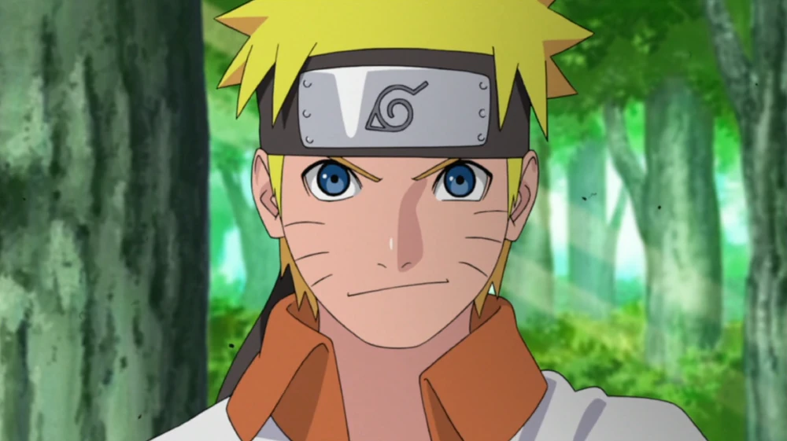
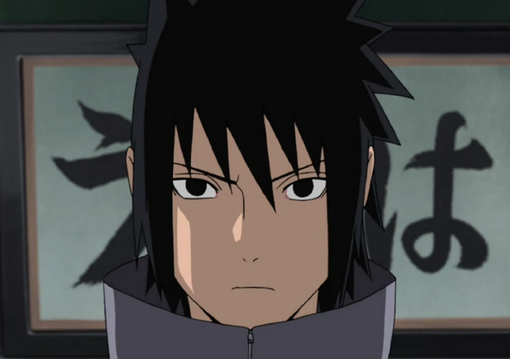
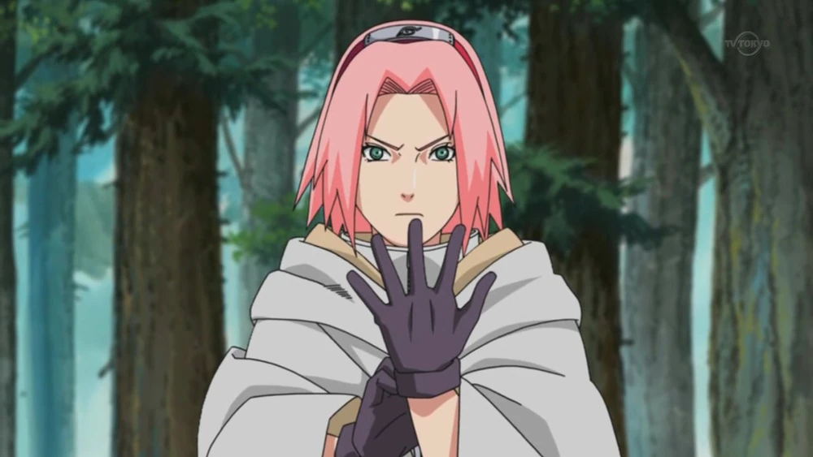
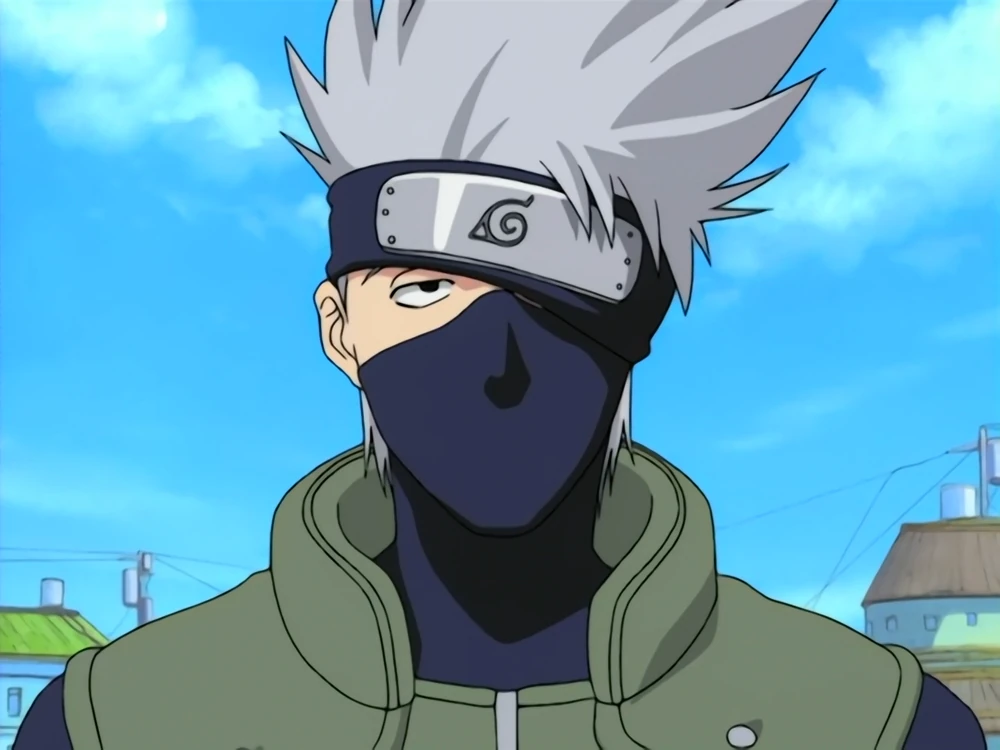

Naruto Uzumaki (うずまきナルト, Uzumaki Naruto) es el protagonista de la serie del manga y anime Naruto y Naruto Shippūden. Asimismo es partícipe del manga y anime Boruto: Naruto Next Generations, secuela de la obra original de Masashi Kishimoto. Es residente de Konohagakure, hijo del Cuarto Hokage, Minato Namikaze y su esposa Kushina Uzumaki, además de ser la actual reencarnación de Asura Ōtsutsuki.

Naruto
Sasuke Uchiha
Sasuke Uchiha (うちはサスケ, Uchiha Sasuke) es el deuteragonista de la serie y uno de los supervivientes del Clan Uchiha. Es hijo de Fugaku Uchiha y Mikoto Uchiha, hermano de Itachi Uchiha, así como la Reencarnación actual de Indra Ōtsutsuki.

Sasuke
Sakura Haruno
Sakura Haruno (春野サクラ, Haruno Sakura) cuyo nombre actual es Sakura Uchiha (うちはサクラ, Uchiha Sakura) es la tritagonista de la serie. Es una kunoichi de nivel Jōnin, miembro del Equipo Kakashi y una gran amiga de Naruto Uzumaki. Después de su entrenamiento con Tsunade, se convirtió en una de las mejores Ninja Médico de la aldea y actualmente es la Jefa del Departamento Médico. Finalmente se convirtió en la esposa de Sasuke Uchiha y la madre de Sarada Uchiha.

Sakura
Kakashi Hatake
Kakashi Hatake (はたけカカシ, Hatake Kakashi) es un shinobi de Konohagakure. Fue un Jōnin, ex-ANBU y el líder del Equipo 7. Fue conocido mundialmente por su uso del Sharingan, lo que le valió el apodo de Kakashi el Ninja que Copia (コピー忍者のカカシ, Kopi Ninja no Kakashi) y Kakashi del Sharingan (写輪眼のカカシ, Sharingan no Kakashi). En su adolescencia fue alumno de Minato Namikaze y compañero de equipo de Obito Uchiha y Rin Nohara. También fue el capitán de la Tercera División de la Gran Alianza Shinobi. Después de los acontecimientos de la Cuarta Guerra Mundial Shinobi, Kakashi se convirtió en el Sexto Hokage (六代目火影, Rokudaime Hokage; que significa "Sexta Sombra del Fuego") de Konoha.

Kakashi Hatake
Madara Uchiha
Madara Uchiha (うちはマダラ, Uchiha Madara) fue un legendario shinobi, co-fundador de Konoha y líder del Clan Uchiha durante su tiempo. Además, fue la pasada Reencarnación de Indra Ōtsutsuki. Luego, fue revivido en la Cuarta Guerra Mundial Shinobi para luchar contra la Gran Alianza Shinobi, revelando sus verdaderas intenciones, haciéndolo el antagonista principal de la serie. Madara logró capturar a las nueve Bestias con Cola, sellarlas en la Estatua Demoníaca del Camino Exterior y, de esa manera, convertirse en el tercer y último Jinchūriki del Diez Colas.